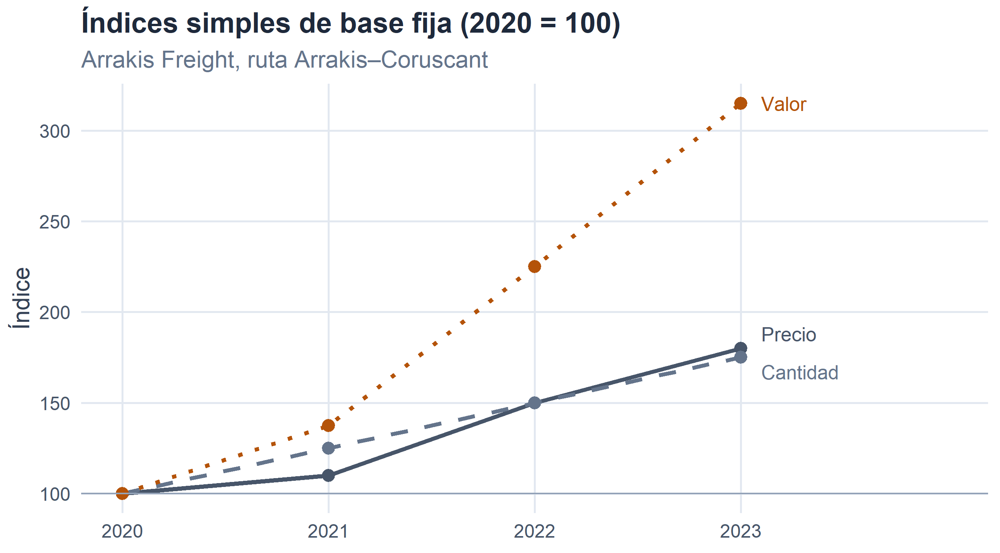
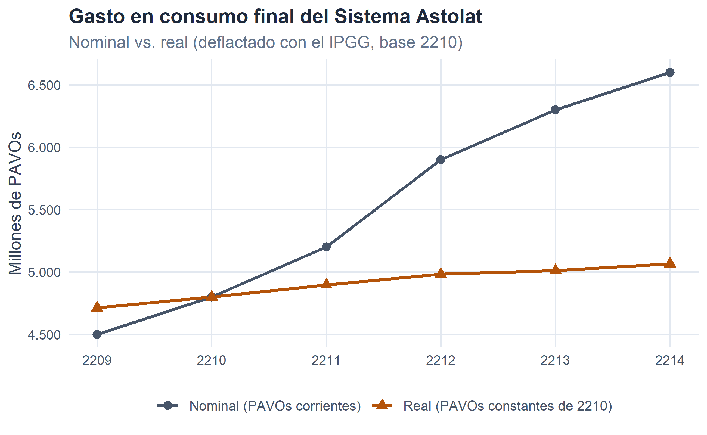

5 Números índice.

Figura 5.1
Figura 5.1. Cuando las magnitudes cambian con el tiempo (y con la sospecha).
Un aviso, para empezar, dirigido a quien haya llegado hasta aquí esperando series de datos, muestras y distribuciones de frecuencias como en los capítulos anteriores. Este es un capítulo raro: no hay muestras, ni histogramas, ni casi ecuaciones con letras griegas. Solo hay cocientes. Cocientes entre magnitudes económicas medidas en distintos momentos del tiempo, y una insistencia bastante persistente en que esos cocientes se interpreten con cabeza.
La razón de dedicarles todo un tema es sencilla, y muy anterior a la existencia de los cargueros interestelares: cualquier magnitud económica que se mida a lo largo del tiempo —un precio, una cantidad producida, un valor de ventas, un PIB— cambia, y para hablar con propiedad de esos cambios no basta con decir “ha subido” o “ha bajado”. Hace falta un número que sintetice cuánto ha subido o bajado con respecto a una referencia clara. Ese número, en su versión más humilde, es un número índice.
5.1 Concepto de número índice.
Empecemos con un caso muy pequeño y muy familiar. La compañía Arrakis Freight, con sede en Arrakis y flota renovada, publica cada año en su memoria corporativa el precio unitario de su servicio de carga estándar en la ruta Arrakis–Coruscant (en PAVOs/tonelada), la cantidad transportada (en miles de toneladas) y el valor total facturado en esa ruta:
| Año | Precio (PAVOs/tonelada) | Cantidad (miles de toneladas) | Valor (miles de PAVOs) |
|---|---|---|---|
| 2210 | 30 | 1200 | 36.000 |
| 2211 | 33 | 1500 | 49.500 |
| 2212 | 45 | 1800 | 81.000 |
| 2213 | 54 | 2100 | 113.400 |
Tabla 5.1. Ruta Arrakis–Coruscant de Arrakis Freight, 2210–2213.
Ante estos datos, las tres preguntas que un directivo de la compañía suele formularse son casi siempre las mismas:
- ¿Cuánto ha subido el precio entre dos años cualesquiera?
- ¿Cuánto ha crecido la cantidad transportada en ese mismo período?
- Y, sobre todo, dado que ambas cosas ocurren simultáneamente, ¿cuánto ha cambiado el valor total facturado, y en qué medida se debe al precio y en qué medida a la cantidad?
Podríamos limitarnos a mirar los números en bruto, pero comparar \(54\) PAVOs frente a \(30\) PAVOs, o \(2\,100\) frente a \(1\,200\) mil toneladas, no da una idea rápida y homogénea. Lo que sí la da es medir el precio (o la cantidad, o el valor) de \(2213\) como múltiplo del de \(2210\): \(54/30 = 1{,}80\). El precio ha pasado a valer \(1{,}80\) veces lo que valía en \(2210\); o, equivalentemente, ha subido un \(80\,\%\). Ese cociente, \(1{,}80\), es un número índice.
Un número índice es una medida estadística que resume, mediante un cociente, los cambios que experimenta una magnitud —simple o compleja— a lo largo del tiempo o a través del espacio.
Aunque en este capítulo hablaremos casi siempre de comparaciones temporales, la definición cubre también las comparaciones espaciales: un número índice puede comparar, por ejemplo, el precio del combustible interestelar en Mustafar con el precio en Miranda. En cualquier caso, el número índice necesita dos referencias:
- el período base (o de referencia), el que se toma como patrón de comparación, y
- el período actual (o corriente), aquel cuya magnitud se compara con la del período base.
Y según se elija fijar el período base a lo largo del tiempo o irlo desplazando, los números índice pueden ser de base fija o encadenados. Vamos a construir ambos con los datos de Arrakis Freight.
5.2 Números índice simples.
Un número índice simple compara los valores de una única magnitud a lo largo del tiempo (o del espacio). Es la versión más elemental del concepto, y la que conviene entender bien antes de pasar a nada más complejo.
5.2.1 Base fija.
Cuando el período base es siempre el mismo, hablamos de números índice de base fija. Sobre nuestro ejemplo, tomando como base el año \(2210\):
\[ p_{0}^{t} \;=\; \frac{p_{t}}{p_{0}}, \qquad q_{0}^{t} \;=\; \frac{q_{t}}{q_{0}}, \qquad V_{0}^{t} \;=\; \frac{p_{t}\, q_{t}}{p_{0}\, q_{0}} \;=\; p_{0}^{t}\cdot q_{0}^{t}. \]
La notación \(p_{0}^{t}\) se lee como “índice de precios en el período \(t\) con base en el período \(0\)”; y análogamente para cantidad (\(q\)) y valor (\(V\)). La última igualdad es una relación deliciosamente sencilla y que conviene retener desde ya: el índice de valor es siempre el producto del índice de precios por el índice de cantidades. Traducido: la evolución de lo que ingresa una empresa por un producto se explica siempre por el efecto conjunto de lo que ha variado el precio unitario y de lo que ha variado la cantidad vendida.
Aplicándolo a Arrakis Freight:
| Año | Índice de precios (\(p_{0}^{t}\)) | Índice de cantidades (\(q_{0}^{t}\)) | Índice de valor (\(V_{0}^{t}\)) |
|---|---|---|---|
| 2210 | 1,0000 | 1,0000 | 1,0000 |
| 2211 | 1,1000 | 1,2500 | 1,3750 |
| 2212 | 1,5000 | 1,5000 | 2,2500 |
| 2213 | 1,8000 | 1,7500 | 3,1500 |
Tabla 5.2. Índices simples de base fija (base = 2210) para la ruta Arrakis–Coruscant.
La lectura es directa. Entre \(2210\) y \(2213\), el precio del servicio de carga en la ruta Arrakis–Coruscant se ha multiplicado por \(1{,}80\) (ha subido un \(80\,\%\)); la cantidad transportada, por \(1{,}75\) (ha subido un \(75\,\%\)); y el valor facturado, por \(3{,}15\) (ha subido un \(215\,\%\)). Y, como es fácil comprobar, \(1{,}80 \times 1{,}75 = 3{,}15\): el fuerte tirón de las ventas es fruto de que precio y cantidad han crecido a la vez.
5.2.2 Encadenados.
En los números índice encadenados el período base se desplaza junto con el período corriente: cada año se compara con el año inmediatamente anterior. Las fórmulas son las mismas, cambiando el subíndice del período base:
\[ p_{t-1}^{t} \;=\; \frac{p_{t}}{p_{t-1}}, \qquad q_{t-1}^{t} \;=\; \frac{q_{t}}{q_{t-1}}, \qquad V_{t-1}^{t} \;=\; p_{t-1}^{t}\cdot q_{t-1}^{t}. \]
| Año | Índice de precios (\(p_{t-1}^{t}\)) | Índice de cantidades (\(q_{t-1}^{t}\)) | Índice de valor (\(V_{t-1}^{t}\)) |
|---|---|---|---|
| 2210 | — | — | — |
| 2211 | 1,1000 | 1,2500 | 1,3750 |
| 2212 | 1,3636 | 1,2000 | 1,6364 |
| 2213 | 1,2000 | 1,1667 | 1,4000 |
Tabla 5.3. Índices simples encadenados para la ruta Arrakis–Coruscant.
La lectura ahora es distinta y complementaria: cada valor mide la variación respecto al año inmediatamente anterior. Un dato de \(1{,}3636\) en el índice de precios de \(2212\) indica que en ese año el precio subió un \(36{,}36\,\%\) con respecto a \(2211\). Y el índice del año \(2210\) no puede calcularse: no existe \(2209\) en la serie, así que el denominador falla y se representa como un guion.
5.2.3 Sobre la presentación de un número índice.
Institutos estadísticos, bancos centrales y prensa económica no suelen publicar los números índice tal cual los hemos calculado, sino multiplicados por \(100\). Un valor de \(1{,}80\) aparece como \(180{,}00\), un valor de \(0{,}90\) como \(90{,}00\), y un valor de \(1{,}00\) como \(100{,}00\).
Es simplemente una convención cosmética: no cambia nada de la matemática, y facilita algo la lectura. Bajo esta convención, en un índice de base fija, el valor \(100\) marca siempre el período base; en un índice encadenado, cualquier valor por encima de \(100\) indica crecimiento y cualquier valor por debajo indica descenso respecto al período anterior. Por conveniencia, en el resto del capítulo alternaremos la escala decimal (\(1{,}80\)) y la escala porcentual (\(180{,}00\)) según convenga: la que resulte más limpia para lo que se está haciendo en cada momento.

Figura 5.2
Con la representación gráfica el patrón se ve de una sola ojeada: la evolución de los tres índices al alza, con la línea del valor abriéndose paso por encima de las otras dos como recordatorio de que precio y cantidad, cuando tiran en la misma dirección, se refuerzan mutuamente.
5.3 Propiedades de los números índice.
Todo número índice bien definido debería cumplir un puñado de propiedades naturales, esto es, propiedades que uno esperaría de cualquier cociente que pretenda medir cambios relativos. Las enunciamos para el caso del índice de precios; valen igual para los de cantidad y de valor.
Unicidad. Todo número índice debe existir. Traducido: el denominador nunca puede ser cero. Aunque parezca una obviedad, no es un caso hipotético: un producto que no se comercializara en el período base, o un componente que aún no existiera (piénsese en el precio del combustible de fusión antimateria en el año \(2100\)), inutilizaría cualquier intento de tomar ese período como base para ese componente.
Identidad. Cuando el período actual coincide con el período base, el índice debe valer \(1\) (o \(100\), en escala porcentual):
\[ p_{t}^{t} \;=\; \frac{p_{t}}{p_{t}} \;=\; 1. \]
Inversión o reversión cronológica. Si se intercambian los papeles de período base y período actual, el número índice resultante debe ser el inverso del original:
\[ p_{b}^{a} \;=\; \frac{p_{a}}{p_{b}} \;=\; z \quad\Longrightarrow\quad p_{a}^{b} \;=\; \frac{p_{b}}{p_{a}} \;=\; \frac{1}{z}. \]
Si en la ruta Arrakis–Coruscant el precio de \(2213\) es \(1{,}80\) veces el de \(2210\), entonces, mirado en sentido inverso, el precio de \(2210\) es \(1/1{,}80 \approx 0{,}556\) veces el de \(2213\). Coherencia elemental que un índice serio jamás debería romper.
Proporcionalidad constante independiente de la base. Si dividimos dos números índice con la misma base y períodos actuales \(a\) y \(b\), respectivamente, el resultado debe ser el número índice de base \(b\) y período actual \(a\):
\[ \frac{p_{h}^{a}}{p_{h}^{b}} \;=\; \frac{p_{a}/p_{h}}{p_{b}/p_{h}} \;=\; \frac{p_{a}}{p_{b}} \;=\; p_{b}^{a}. \]
Esta propiedad es, técnicamente, la más práctica de las cuatro: es la que nos permitirá cambiar de base una serie de índices ya calculada sin tener que reconstruirla desde los datos originales, tarea a la que dedicaremos, más adelante, una sección propia.
Los índices simples de precios, cantidades y valor cumplen las cuatro propiedades sin esfuerzo. Los complejos, como veremos enseguida, no todos: algunos las cumplen y otros no, y ahí radicará buena parte del debate sobre cuál usar en cada situación.
5.4 Números índice complejos.
Hasta ahora hemos trabajado con un solo producto o servicio. En la práctica, sin embargo, casi nunca se estudia la evolución de un precio aislado: se estudia la evolución del conjunto de precios de una cesta de bienes y servicios (piense en el IPC, que resume la evolución de miles de precios en un único número), o el conjunto de cantidades producidas por una empresa multiproducto, o el valor global de las ventas de una compañía con varias líneas de negocio.
Cuando se pretende sintetizar la evolución de varias magnitudes en un único índice, hablamos de números índice complejos. La idea es intuitiva: un índice complejo es un promedio ponderado de los correspondientes índices simples, uno para cada uno de los \(N\) productos o servicios que forman parte del conjunto.
Para el caso de un índice de precios de \(N\) bienes:
\[ IC_{0}^{t} \;=\; \sum_{i=1}^{N} p_{i,0}^{t} \cdot \frac{w_{i}}{\sum_{j=1}^{N} w_{j}}. \]
Los pesos \(w_{i}/\sum w_{j}\) son las ponderaciones: números entre \(0\) y \(1\) que suman \(1\), y que indican la importancia relativa de cada bien dentro del conjunto. No tendría sentido, por ejemplo, dar el mismo peso al precio del pan que al precio de la vivienda al calcular el IPC: la vivienda pesa mucho más en el presupuesto medio de un hogar. La pregunta clave es, entonces, cómo se eligen esas ponderaciones, y de esa elección nacen los distintos tipos de índice complejo que la literatura ha ido consolidando.
5.4.1 Índices de precios: Laspeyres, Paasche y Fisher.
Los tres protagonistas del capítulo son los índices de Laspeyres, Paasche y Fisher. Todos ellos son promedios ponderados de índices de precios simples; se diferencian solo en el momento del tiempo del que se toman los pesos.
Laspeyres utiliza como ponderación el valor de cada bien en el período base (\(p_{i,0}\cdot q_{i,0}\)). Sustituyendo en la expresión general y simplificando el índice simple \(p_{i,0}^{t} = p_{i,t}/p_{i,0}\):
\[ L_{p} \;=\; \sum_{i=1}^{N} \frac{p_{i,t}}{p_{i,0}} \cdot \frac{p_{i,0}\, q_{i,0}}{\sum_{j} p_{j,0}\, q_{j,0}} \;=\; \frac{\sum_{i} p_{i,t}\, q_{i,0}}{\sum_{i} p_{i,0}\, q_{i,0}}. \]
Paasche utiliza como ponderación el valor de cada bien en el período actual (\(p_{i,0}\cdot q_{i,t}\)):
\[ P_{p} \;=\; \sum_{i=1}^{N} \frac{p_{i,t}}{p_{i,0}} \cdot \frac{p_{i,0}\, q_{i,t}}{\sum_{j} p_{j,0}\, q_{j,t}} \;=\; \frac{\sum_{i} p_{i,t}\, q_{i,t}}{\sum_{i} p_{i,0}\, q_{i,t}}. \]
Fisher es la media geométrica de los dos anteriores:
\[ F_{p} \;=\; \sqrt{L_{p}\cdot P_{p}}. \]
Cada uno tiene sus ventajas y sus inconvenientes. Laspeyres es el más popular por una razón muy prosaica: solo necesita las cantidades del período base, que se conocen y no cambian año a año, lo que simplifica enormemente la recogida de información y evita reponderar continuamente. Paasche, en cambio, obliga a actualizar las cantidades cada año, tarea costosa. Y Fisher, elegante y equilibrado, tiene el mérito matemático de ser el único de los tres que cumple la propiedad de reversión cronológica; su coste es que hereda los inconvenientes prácticos de los otros dos, ya que necesita ambas cantidades.
En términos generales, se admite que un índice de tipo Laspeyres tiende a sobrestimar el efecto real del cambio de precios, porque supone implícitamente que las cantidades adquiridas se mantienen a los niveles del período base y no reaccionan al encarecimiento. Un índice de tipo Paasche, en cambio, tiende a subestimarlo por la razón simétrica: los agentes ya han reasignado sus cantidades a la nueva estructura de precios. Fisher, al promediar ambos, corrige parcialmente el sesgo.
5.4.2 Índices de cantidades.
Los tres esquemas se aplican también, con las mismas fórmulas pero con los papeles de \(p\) y \(q\) intercambiados, para construir índices de cantidades:
\[ L_{q} \;=\; \frac{\sum_{i} q_{i,t}\, p_{i,0}}{\sum_{i} q_{i,0}\, p_{i,0}}, \qquad P_{q} \;=\; \frac{\sum_{i} q_{i,t}\, p_{i,t}}{\sum_{i} q_{i,0}\, p_{i,t}}, \qquad F_{q} \;=\; \sqrt{L_{q}\cdot P_{q}}. \]
Laspeyres para cantidades usa como pesos los precios del período base; Paasche los del período actual; Fisher los combina. Y, cerrando el círculo, cuando se usan los índices de Fisher se cumple —solo en ese caso— la relación
\[ V_{0}^{t} \;=\; F_{p}\cdot F_{q}, \]
que es exactamente la misma que ya vimos en los índices simples: la evolución del valor total se descompone limpiamente en un efecto precio y un efecto cantidad.
5.4.3 Un ejemplo con dos servicios de Hyperdrive Express.
Volvemos a un actor conocido: la compañía Hyperdrive Express, con sede en Miranda. Como en los capítulos anteriores, sus balances (activo, ingresos, resultado…) están recogidos en la base R-Stars. Aquí, sin embargo, vamos a considerar dos de sus líneas de negocio con datos ad-hoc en dos ejercicios que no aparecen en el fichero: el servicio A, transporte de carga (medido en PAVOs por tonelada) y el servicio B, transporte de pasajeros de tercera clase (medido en PAVOs por pasajero). Los datos son los siguientes:
| Año | \(p_{A}\) (PAVOs/tonelada) | \(q_{A}\) (toneladas) | \(p_{B}\) (PAVOs/pasajero) | \(q_{B}\) (pasajeros) |
|---|---|---|---|---|
| 2210 | 5 | 6.000 | 12 | 2.000 |
| 2213 | 10 | 7.500 | 20 | 5.000 |
Tabla 5.4. Hyperdrive Express: precios y cantidades de dos servicios en 2210 (base) y 2213.
Con estos datos, tomando \(2210\) como período base y \(2213\) como actual, los tres índices complejos de precios salen:
\[ L_{p} \;=\; \frac{10\cdot 6\,000 + 20\cdot 2\,000}{5\cdot 6\,000 + 12\cdot 2\,000} \;=\; 1,8519 \;\longrightarrow\; 185,19\ \text{si base}=100. \]
\[ P_{p} \;=\; \frac{10\cdot 7\,500 + 20\cdot 5\,000}{5\cdot 7\,500 + 12\cdot 5\,000} \;=\; 1,7949 \;\longrightarrow\; 179,49\ \text{si base}=100. \]
\[ F_{p} \;=\; \sqrt{L_{p}\cdot P_{p}} \;=\; \sqrt{1,8519 \cdot 1,7949} \;=\; 1,8231 \;\longrightarrow\; 182,31\ \text{si base}=100. \]
Y, replicando el ejercicio para las cantidades:
\[ L_{q} \;=\; \frac{7\,500\cdot 5 + 5\,000\cdot 12}{6\,000\cdot 5 + 2\,000\cdot 12} \;=\; 1,8056, \qquad P_{q} \;=\; \frac{7\,500\cdot 10 + 5\,000\cdot 20}{6\,000\cdot 10 + 2\,000\cdot 20} \;=\; 1,7500, \]
\[ F_{q} \;=\; \sqrt{L_{q}\cdot P_{q}} \;=\; 1,7776. \]
En resumen, y en tabla:
| Concepto | Precios (\(\times 100\)) | Cantidades (\(\times 100\)) |
|---|---|---|
| Laspeyres | 185,19 | 180,56 |
| Paasche | 179,49 | 175,00 |
| Fisher | 182,31 | 177,76 |
Tabla 5.5. Índices complejos de Hyperdrive Express, del año 2210 al 2213 (base 2210 = 100).
Sea cual sea el índice que elija el analista, la lectura es unívoca: entre \(2210\) y \(2213\), el conjunto de precios de los dos servicios de Hyperdrive Express subió alrededor de un \(80\text{–}85\,\%\) y el conjunto de cantidades comercializadas alrededor de un \(75\text{–}80\,\%\). Es también interesante observar la relación valor = precio \(\times\) cantidad solo para los índices de Fisher:
\[ F_{p}\cdot F_{q} \;=\; 1,8231\cdot 1,7776 \;=\; 3,2407 \;=\; V_{0}^{t} \;=\; \frac{10\cdot 7\,500 + 20\cdot 5\,000}{5\cdot 6\,000 + 12\cdot 2\,000} \;=\; 3,2407. \]
El valor total facturado por los dos servicios se ha multiplicado por \(3,2407\) y esa cifra se descompone limpiamente como producto del efecto precio y el efecto cantidad. Con Laspeyres o Paasche esta descomposición no se cumpliría exactamente: es una elegancia adicional que solo Fisher se reserva para sí.
5.5 Enlace y cambios de base.
Los números índice de base fija sufren un problema estructural: la elección del período base envejece. Con el tiempo, la estructura económica, los patrones de consumo y los propios productos cambian tanto que un año base demasiado lejano deja de ser una referencia comparable. En el ámbito galáctico, tomar como base el año \(2050\) para medir el nivel de precios de \(2216\) tendría un aire similar a tomar el precio del pergamino para medir el coste de las suscripciones a servicios en la nube: técnicamente posible, informativamente inútil.
Hay dos maneras razonables de convivir con este problema:
- Trabajar con números índice encadenados, en los que la base se desplaza automáticamente año a año, y por diseño está siempre “cerca”.
- Cambiar de base cada cierto tiempo y enlazar las series antigua y nueva para no perder la comparabilidad histórica.
La segunda opción es la habitual en organismos estadísticos como el INE terrestre o el (ficticio) Consejo Estelar de Estadística Galáctica: cada \(5\) o \(10\) años se actualiza la base del IPC, y se ofrece la serie histórica ya reexpresada en la nueva base. Vamos a ver cómo se hace ese cambio de base con nuestras propias manos, apoyándonos en la propiedad de proporcionalidad constante independiente de la base que enunciamos en la sección de propiedades.
Supongamos que disponemos de una serie de índice de precios de un conjunto de bienes de consumo galácticos con base en el año \(2208\), y que queremos reexpresarla con base en \(2212\). La expresión del enlace técnico es:
\[ p_{h}^{t} \;=\; \frac{p_{0}^{t}}{p_{0}^{h}}, \]
que sale directamente de aplicar la propiedad ya mencionada tomando como “base antigua” el período \(0\) (aquí, \(2208\)) y como “base nueva” el período \(h\) (aquí, \(2212\)). Ilustrémoslo con datos concretos.
| Año | Índice base 2208 | Índice base 2212 | Índice enlazado (base 2212) |
|---|---|---|---|
| 2208 | 100,00 | — | 45,4545 |
| 2209 | 130,00 | — | 59,0909 |
| 2210 | 160,00 | — | 72,7273 |
| 2211 | 190,00 | — | 86,3636 |
| 2212 | 220,00 | 100,00 | 100,0000 |
| 2213 | — | 130,00 | 130,0000 |
| 2214 | — | 180,00 | 180,0000 |
| 2215 | — | 240,00 | 240,0000 |
| 2216 | — | 250,00 | 250,0000 |
Tabla 5.6. Cambio de base de un índice de precios: enlace técnico de la base 2208 a la base 2212.
Ejemplos de cálculo, sobre la parte antigua de la serie:
\[ p_{2212}^{2208} \;=\; \frac{p_{2208}^{2208}}{p_{2208}^{2212}} \cdot 100 \;=\; \frac{100}{220}\cdot 100 \;=\; 45,4545. \]
\[ p_{2212}^{2210} \;=\; \frac{p_{2208}^{2210}}{p_{2208}^{2212}} \cdot 100 \;=\; \frac{160}{220}\cdot 100 \;=\; 72,7273. \]
El resultado se lee así: con la nueva base \(2212=100\), el nivel de precios de \(2208\) era \(45,45\) (es decir, un \(54,5\,\%\) inferior al de \(2212\)); y el de \(2210\) era \(72,73\) (un \(27,3\,\%\) inferior). La serie enlazada ofrece ahora una única lectura, con la misma escala de referencia, tanto para los años antiguos como para los nuevos.
5.6 Deflactación de series económicas.
Llegamos a la aplicación más importante, con diferencia, de todo lo anterior. Los precios no son magnitudes inmóviles: cambian con el tiempo, casi siempre al alza (a la caída también, pero eso ya es tema para el capítulo de casos especiales de cualquier libro de historia económica). Y ese hecho, aparentemente inocuo, tiene una consecuencia perversa que puede confundir a cualquier analista poco entrenado: las cifras económicas en unidades monetarias pueden crecer sin que realmente crezca la actividad, simplemente porque los precios están subiendo.
Ilustrémoslo con una fábula muy sencilla. Un pequeño planeta (llamémoslo Isla Cinturón, en las afueras del Sistema Astolat) produce, en el año \(0\), cuatro bienes y servicios distintos:
| Bien o servicio | Cantidad (\(q_{0}\)) | Precio año 0 (\(p_{0}\)) | Valor año 0 (\(p_{0} q_{0}\)) |
|---|---|---|---|
| Coco melifluo | 2.500 | 2 | 5.000 |
| Vino de anillo | 800 | 6 | 4.800 |
| Cesta de mimbre plasma | 600 | 20 | 12.000 |
| Excursión orbital en grupo | 34 | 800 | 27.200 |
Tabla 5.7. Producción de Isla Cinturón en el año 0. Los precios están en PAVOs y las cantidades en las unidades habituales de cada bien.
El valor total de la producción del año \(0\) es de \(49.000\) PAVOs. Pasan algunos años; llega un año \(t\) posterior, con nuevos precios y nuevas cantidades:
| Bien o servicio | Cantidad (\(q_{t}\)) | Precio año \(t\) (\(p_{t}\)) | Valor año \(t\) (\(p_{t} q_{t}\)) |
|---|---|---|---|
| Coco melifluo | 2.000 | 4 | 8.000 |
| Vino de anillo | 800 | 8 | 6.400 |
| Cesta de mimbre plasma | 800 | 15 | 12.000 |
| Excursión orbital en grupo | 25 | 1.000 | 25.000 |
Tabla 5.8. Producción de Isla Cinturón en el año t. Ninguno de los cuatro precios se ha mantenido estable respecto del año 0.
Un directivo apresurado, que se limitara a comparar el valor total del año \(0\) (\(49.000\) PAVOs) con el del año \(t\) (\(51.400\) PAVOs), anunciaría —con un ligero tinte triunfalista— que la producción de Isla Cinturón ha crecido un \(4,90\,\%\). Pero no ha comparado producciones: ha comparado facturaciones. Y facturar más no siempre es producir más.
Para ver qué ha ocurrido realmente con las cantidades producidas, hay que valorar la producción del año \(t\) a los precios del año \(0\), no a los precios del año \(t\). Es decir, quitar el efecto de la subida (y la bajada) de precios:
| Bien o servicio | Cantidad (\(q_{t}\)) | Precio año 0 (\(p_{0}\)) | Valor año \(t\) a precios de \(0\) (\(p_{0} q_{t}\)) |
|---|---|---|---|
| Coco melifluo | 2.000 | 2 | 4.000 |
| Vino de anillo | 800 | 6 | 4.800 |
| Cesta de mimbre plasma | 800 | 20 | 16.000 |
| Excursión orbital en grupo | 25 | 800 | 20.000 |
Tabla 5.9. Producción del año t valorada a precios del año 0. Ahora sí se compara producción con producción.
Con precios homogéneos, la conclusión cambia de signo: la producción no ha crecido un \(4,90\,\%\); en realidad, ha decrecido un \(8,57\,\%\). Isla Cinturón produce menos cocos y menos excursiones que antes; solo la subida general de precios había disimulado ese retroceso al mirar la cifra en PAVOs corrientes.
5.6.1 Nominal, real y deflactor.
De este pequeño experimento nace la distinción fundamental que utilizará cualquier analista económico:
Una variable económica está expresada a precios corrientes o en términos nominales cuando los valores de cada período utilizan los precios propios de ese período. Está expresada a precios constantes o en términos reales cuando todos los valores están calculados con los precios de un mismo período de referencia.
La inmensa mayoría de las estadísticas económicas se publican, de partida, en términos nominales (así se recaudan, sin más manipulación). Convertirlas a términos reales es una operación que se llama deflactación, y que consiste en dividir la serie nominal por un número índice de precios adecuado, llamado deflactor.
En términos generales:
\[ X_{t}^{\text{real}} \;=\; \frac{X_{t}^{\text{nominal}}}{\mathrm{Deflactor}_{t}}\cdot 100, \]
donde el \(\times 100\) hace falta si el deflactor está publicado en escala porcentual (que es lo habitual). El resultado es una serie expresada en unidades monetarias del año base del deflactor.
Elegir bien el deflactor no es trivial: para un gasto en consumo, el deflactor natural es el IPC; para el PIB, el deflactor implícito del PIB; para las ventas de un sector concreto, un índice de precios de producción sectorial. Regla informal: úsese el deflactor más ajustado posible a la magnitud que se quiere deflactar, y no el primero que se tenga a mano.
5.6.2 Un ejemplo con datos anuales.
Supongamos que el Consejo Estelar de Estadística Galáctica publica anualmente el gasto en consumo final del Sistema Astolat (en millones de PAVOs corrientes) y, en paralelo, un Índice General de Precios Galácticos (IPGG) con base \(2210 = 100\), que resume la evolución del nivel de precios del conjunto de bienes y servicios de consumo. Los datos publicados son:
| Año | Gasto nominal (millones PAVOs) | IPGG (base 2210 = 100) | Gasto real (millones PAVOs de 2210) |
|---|---|---|---|
| 2209 | 4.500 | 95,50 | 4.712,04 |
| 2210 | 4.800 | 100,00 | 4.800,00 |
| 2211 | 5.200 | 106,20 | 4.896,42 |
| 2212 | 5.900 | 118,40 | 4.983,11 |
| 2213 | 6.300 | 125,70 | 5.011,93 |
| 2214 | 6.600 | 130,30 | 5.065,23 |
Tabla 5.10. Gasto en consumo final del Sistema Astolat: paso de nominal a real usando el IPGG como deflactor.
Un ejemplo de cálculo, para el año \(2213\):
\[ \text{Gasto}_{2213}^{\text{real (a precios de 2210)}} \;=\; \frac{6\,300}{125{,}7}\cdot 100 \;=\; 5.011,93 \ \text{millones de PAVOs de 2210}. \]
Y, graficando las dos series juntas:

Figura 5.3
Las dos series cuentan historias distintas. En términos nominales, el gasto en consumo del Sistema Astolat pasó de \(4.500\) millones en \(2209\) a \(6.600\) millones en \(2214\): un aumento del \(46,7\,\%\). En términos reales, sin embargo, el gasto solo creció un \(7,5\,\%\) (de \(4.712\) a \(5.065\) millones de PAVOs de \(2210\)). La diferencia entre ambas cifras —aproximadamente \(39,2\) puntos porcentuales— corresponde íntegramente al efecto de la inflación galáctica: no es que Astolat consuma mucho más, es que las cosas cuestan considerablemente más caras.
Y esa distinción, tan sencilla y tan a menudo obviada, es lo que le da a este bloque de la asignatura toda su importancia práctica: cualquier decisión empresarial o de política económica basada en cifras nominales sin deflactar corre el riesgo de estar comparando cosas que, sencillamente, ya no comparten unidad de medida.
5.7 Recapitulación.
Este capítulo ha sido el más “operativo” del libro hasta ahora. En él hemos aprendido a construir y usar números índice, que son la herramienta estadística estándar para medir la evolución de magnitudes económicas en el tiempo (o en el espacio):
- Un número índice simple compara los valores de una única magnitud entre un período base y un período actual, mediante un cociente. Puede ser de base fija (la base no cambia) o encadenado (cada valor se compara con el inmediatamente anterior).
- Los índices simples de precios, cantidades y valor están ligados por una relación multiplicativa: \(V_{0}^{t} = p_{0}^{t}\cdot q_{0}^{t}\).
- Todo número índice bien construido debe cumplir cuatro propiedades naturales: unicidad, identidad, reversión cronológica y proporcionalidad constante independiente de la base.
- Cuando la magnitud a resumir agrupa varios productos, se usan números índice complejos, que son promedios ponderados de los índices simples. Según cómo se definan las ponderaciones aparecen los tres índices clásicos: Laspeyres (pesos del período base), Paasche (pesos del período actual) y Fisher (media geométrica de ambos). Solo Fisher preserva íntegramente la descomposición valor \(=\) precio \(\times\) cantidad.
- El cambio de base de una serie de índices no requiere volver a los datos originales: basta aplicar la propiedad de proporcionalidad para reexpresar toda la serie en la nueva base.
- Finalmente, la deflactación es la aplicación más importante de todo lo anterior: consiste en dividir una serie económica nominal por un índice de precios adecuado (el deflactor) para obtener la serie en términos reales, expresada en unidades monetarias de un año de referencia. Sin este paso previo, muchas comparaciones intertemporales pierden todo su sentido económico.
Con este capítulo cerramos el bloque de estadística descriptiva del curso. En los próximos temas cambiaremos de terreno: en lugar de describir lo que hay, empezaremos a hablar de lo que podría haber, apoyándonos en el cálculo de probabilidades y en la teoría de la inferencia. Hyperdrive Express, Shuttlepod Movers, los astilleros galácticos y la muestra completa de \(300\) compañías R-Stars nos acompañarán también allí; solo que, esta vez, con la incertidumbre puesta sobre la mesa.